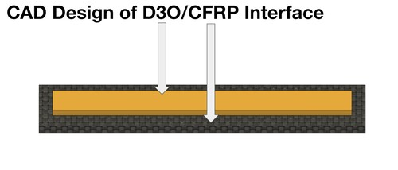
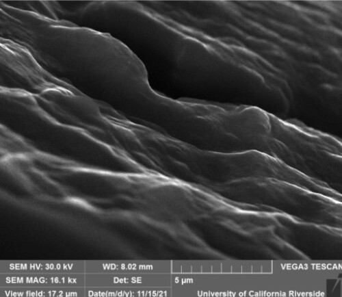
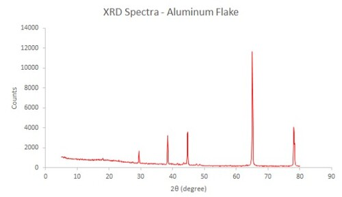
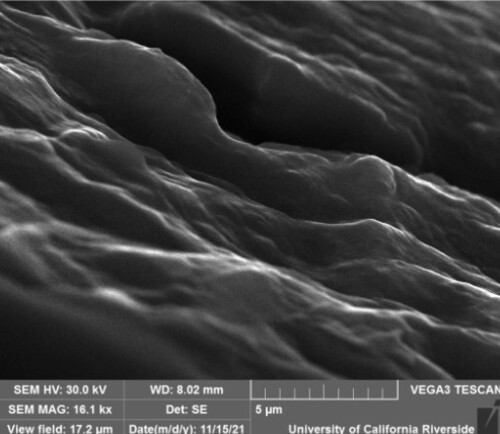
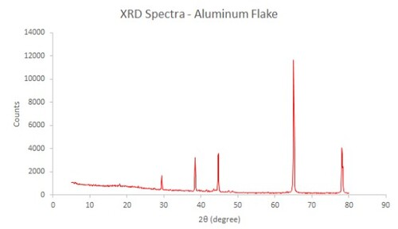

Long Bui
Graduating by June 2022 with a BS in Materials Science and Engineering from the University of California - Riverside. Looking to join a company that will allow me to funnel and nurture my skills and experience into their projects. My interest includes aerospace and aviation, alloy R&D, and materials failure analysis/ prevention. My primary skillsets include CAD (Fusion 360 and SolidWorks), materials characterization (SEM-operator, XRD-, DSC-, DTA-, TGA-, and EDS-observer), technical writing, and customer service. Also accustomed to using several types of mechanical and electrical equipment. Knowledgeable in failure analysis techniques, Six Sigma methods (FMEA and DOE), materials selection process, and materials testing.
I believe that for a project to be successful, there needs to be a strong foundation first. This is true both in the physical and virtual interpretation. For this reason, I chose to major in Materials Science and Engineering in order to understand the fundamental behavior of materials. Armed with such knowledge, I hope to apply what I learn and experienced in order to reinforce currently existing materials by means of new processing and manufacturing methods or by replacing the material with something better. Some steps that I've taken in reaching my goal includes research with advanced material characterization techniques, sound failure analysis and implementation of preventive actions, and material processing and manufacturing using methods like 3D printing, wet layups, and deposition techniques.
In my line of study, there is no room for failure when the product is in service. Therefore, I see no greater informational value than that from research, case studies, seminars, journals, and generally the experiences of others. For that reason alone, I strive to work in an environment that provides the greatest sense of collaboration, teamwork, and mutual respect. Information can be shared and exchanged by first establishing the importance of communication and trust. Only then can we truly learn from the experiences of the group and implement strategies to mitigate project failures to its entirety.
Experience
Senior Design Project - Designer and Manufacturer
• Research implications of additive manufacturing, processes, and characterization in the development of CFRP/polymer sandwich composites for drones and aerospace applications.
• Formulate Design of Experiments (DOE) and Failure Mode & Effect Analysis (FMEA) under ASQ standards.
• Devise an NSF proposal encompassing project research and description, budget, biographical sketches, failure analysis (FA), risk mitigations plans, and connections/resources.
• Self-develop an impact testing rig (Izod-based) to measure impact strength and determine failure modes of the material.
Technical Researcher - Material Characterization
• Implemented X-Ray Diffraction (XRD), Scanning Electron Microscopy (SEM), and Energy Dispersive Spectroscopy (EDS) to characterize and evaluate metallic material features.
• Individually operated an SEM machine (TESCAN Vega3 SBH) to produce a viewable and usable image for characterization.
• Displayed successful SEM training and certification testing with 100% marks in both safety and operation.
Quality Inspector and Designer
• Demonstrated teamwork in the development and processing of an RC-based car modeling the Toyota Mirai.
• Oversaw inspections of the hydrogen fuel cells, responsiveness of the transmitter/ receiver, and structural viability of the mechanical components.
• Placed 11th out of 23 competitors (public and private schools alike). Awarded H2AC’s “Most Innovative Design” 2018.
Education
UC Riverside
Portfolio




 